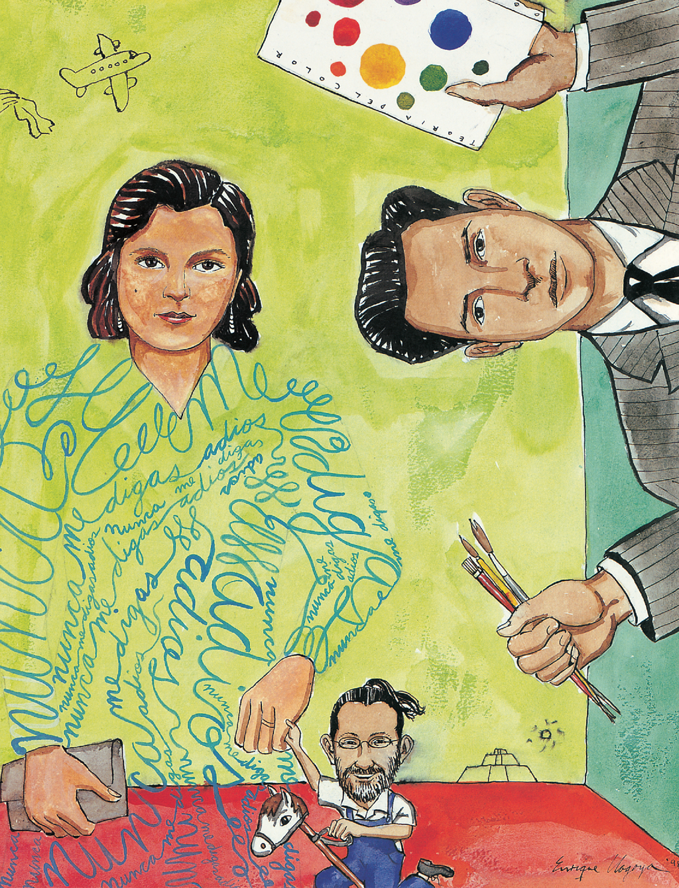

16

16
17

I HONOR MY FATHER
AND MOTHER
written by Enrique Chagoya
I dedicate this drawing to my parents because they were my most important source of love and support when I was growing up.
My father gave me my first drawing and painting lessons and taught me color theory when I was seven years old. I remember that when I first saw him drawing landscapes and animals I thought his hand was magical. Ever since then I’ve always wanted to do the same thing.
My mother had a big heart, not only for our family, but for many people who knew her. She went out of her way to help people in need and never expected anything back.
I drew the shape of my mother’s body using the words, “nunca me digas adios.” That’s Spanish for “never tell me good-bye.” She never wanted to say good-bye to me when I left Mexico. Instead she said, “See you later.” When she died four years ago, we told each other, “See you later.”